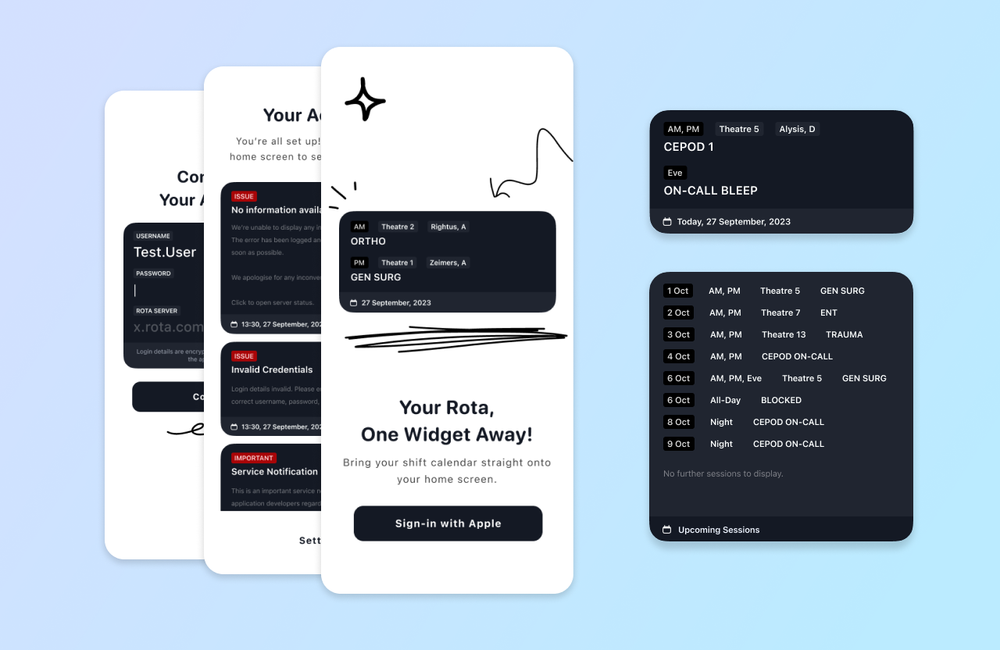
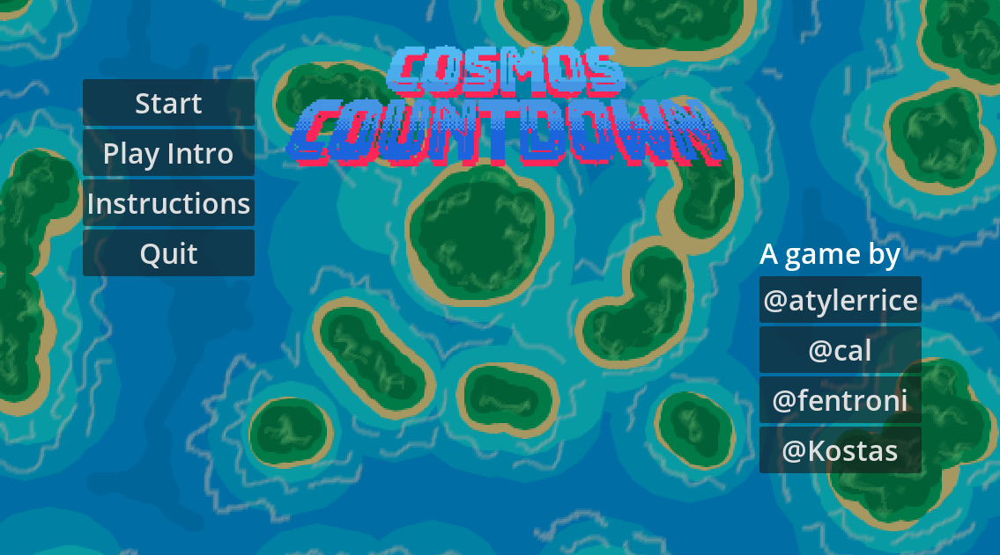

Discover my work
Welcome to my portfolio page, your backstage pass to my world of iOS and game development! Here, you'll find a mix of projects I've whipped up as a freelancer, some fun personal experiments, and the wild rides of game jams I've joined.
Each project is like a little piece of my journey—whether it's working with clients to make their app dreams come true, tinkering around with my own ideas, or diving headfirst into the chaos of a game jam, it's all here.
So kick back, take a scroll, and enjoy the ride. And hey, if you've got a project in mind or just want to chat about code or games, hit me up! Let's make something awesome together!
Rota Widget

Rota Widget is my inaugural project as a freelancer. This app caters specifically to doctors in the UK. Users can securely log in to access their schedules, showcased through both medium and large widgets. For an enhanced experience, users have the option to become Plus members at just £1 per year, unlocking features like faster data refresh and expanded data fetch capabilities.
Read more...
Cosmos Countdown

Cosmos Countdown is a thrilling 2D game crafted during the New Year, New Skills Game Jam by Bitter Sails Games. In this heart-pounding challenge, players embark on a mission to collect vital resources for building a rocket to save Earth from an impending meteor strike. Clicking on airplanes, users must skillfully redirect them to the correct facilities before time runs out. This game received high praise during the jam for its engaging gameplay, well-designed mechanics, and impressive development speed.
Read more...